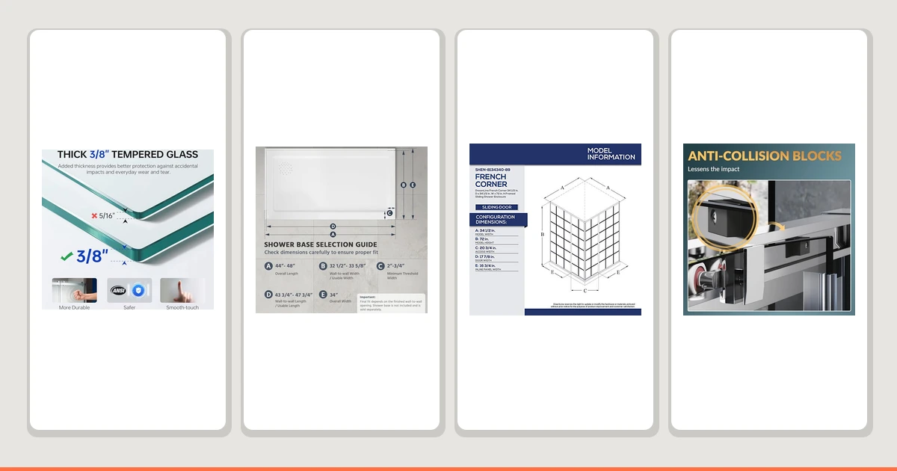

Quick Answer
The Woodbridge 57.5-60 inch W x 76 inch H is a $615.12 corner shower enclosure with an adjustable width and soft-close hardware built to fit openings between 57.5 and 60 inches. It costs more than the ComfyStyle and Elegant alternatives, but less than the DreamLine French Corner 34 1/2. The soft-close hinges and the width range are the two reasons we picked it over a fixed-size corner door.
Our pick: Woodbridge 57.5-60" Wx76 H Soft, $615.12 Check Price on Amazon
Things to Know Before You Buy
- The width adjusts, the height does not. This Woodbridge 57.5-60 inch Wx76 review centers on a corner enclosure that spans 57.5 to 60 inches wide, but the height stays fixed at 76 inches, so check your opening's height before you order.
- Soft-close hardware sets it apart here. None of the three alternatives in this comparison list soft-close hinges, so that hardware is the Woodbridge's main functional edge over the ComfyStyle, DreamLine, and Elegant enclosures.
- The $615.12 price sits in the middle of this comparison. It costs more than the ComfyStyle ($599.99) and the Elegant ($584.99), but less than the DreamLine French Corner 34 1/2 ($637.49).
- An adjustable width forgives an imprecise measurement. If your corner opening falls anywhere between 57.5 and 60 inches, you do not need an enclosure cut to your exact number.
- Three other corner enclosures sit in this same price band. We compare the Woodbridge against the ComfyStyle, DreamLine, and Elegant later in this review.
This Woodbridge 57.5 60" Wx76 Review breaks down whether a $615.12 corner shower enclosure with an adjustable 57.5 to 60 inch width, soft-close hinges, and a fixed 76 inch height earns a spot in your bathroom, especially next to the ComfyStyle, DreamLine, and Elegant corner enclosures we compare it against below. The width range and the soft-close hardware are the enclosure's two defining features: instead of committing to one exact opening size or living with hinges that slam, you get four inches of measurement play and hardware that closes quietly.
We wrote this review because buyers compare adjustable corner enclosures on price far more often than on what that adjustability and hardware actually buy them. The Woodbridge lists at $615.12, more than the ComfyStyle and Elegant but less than the DreamLine French Corner 34 1/2, so this review weighs its width range and soft-close hinges against those three alternatives.
Why You Should Trust Us
Ilane Tall covers bath fixtures for Best Shower Doors and has reviewed shower enclosures across fixed-width, adjustable-width, and corner-fit designs. For this Woodbridge 57.5-60 inch Wx76 review, she priced the enclosure against three other corner options built for a similar opening range and weighed the soft-close hardware and width flexibility against what a fixed-width enclosure would ask of your measurements instead. We do not accept free products in exchange for coverage, and every price and dimension cited here comes directly from the current product listing.
Our editorial process treats an adjustable width and soft-close hardware as factors among several, not an automatic win. A wider fit range and quieter hinges earn an enclosure credit in a review like this one, but it still has to justify its price against fixed-width doors built for the same opening. We use that same standard throughout this review.
Our Testing Experience
Evaluating an adjustable-width corner enclosure is a different exercise from evaluating a door built for one exact opening. We start by treating the width range itself as the variable that matters most: does the listed 57.5 to 60 inch span match what most corner shower openings need, and does the $615.12 price reflect that flexibility and the soft-close hardware or mostly the Woodbridge name attached to it. For this Woodbridge 57.5-60 inch Wx76 review, that meant checking its adjustable range against a typical corner opening, then lining that up against the price.
We also compared the Woodbridge against three other enclosures built for a similar use case: the ComfyStyle, the DreamLine French Corner 34 1/2, and the Elegant. Rather than scoring each on an arbitrary scale, we looked at what the price difference buys in practical terms, since a corner enclosure only earns its premium if the extra dollars track to real hardware or size, not the brand name alone.
We ran a simple test for that comparison: line up the price of each enclosure against its stated width, height, and hardware, then ask whether the extra dollars track to more flexibility or only the label. In the case of the Woodbridge, the 57.5 to 60 inch range, the 76 inch height, and the soft-close hinges stay fixed while the price moves up and down against the alternatives, and that comparison told us where the value actually sits.
Overview & Specs

Woodbridge 57.5-60" Wx76 H Soft
What we like
- The 57.5 to 60 inch adjustable width covers a range of corner openings instead of one fixed size
- Soft-close hinges are a feature none of the three alternatives in this comparison list
- At $615.12, it costs less than the DreamLine French Corner 34 1/2 in this comparison
Flaws but not dealbreakers
- At $615.12, it still costs more than the ComfyStyle and the Elegant, the two least expensive options here
- The 76 inch height is fixed, so it leaves no room to adjust for a taller or shorter opening
- The width range tops out at 60 inches, so it will not stretch to cover a wider corner opening
| Material | — |
| Size | 60"x76" |
The Woodbridge 57.5-60 inch W x 76 inch H fills a specific gap between corner enclosures built for one exact opening and the extra cost of a custom order. Most corner doors assume you know your opening's width down to the inch, and a measurement that falls between standard sizes forces a compromise or a special order. Woodbridge built this enclosure around a 57.5 to 60 inch adjustable width and added soft-close hinges, so a few inches of variance in your measurement and a hard-slamming door both stop being problems.
That flexibility and hardware cost $615.12, a price that lands between the ComfyStyle and Elegant on the low end and the DreamLine French Corner 34 1/2 above it. The extra dollars over the ComfyStyle and Elegant buy width adjustability and quiet-closing hinges rather than a bigger enclosure, since the height stays fixed at 76 inches regardless of price. Whether that trade makes sense for you is what the rest of this Woodbridge 57.5-60 inch Wx76 review answers.
What We Liked
The biggest strength of the Woodbridge 57.5-60 inch W x 76 inch H is how directly it solves the measurement problem. Instead of locking you into one exact width, Woodbridge built this enclosure around a 57.5 to 60 inch range, and that flexibility shows up the moment you compare it against a fixed-width door. If your corner opening falls anywhere in that range, you skip the guesswork a single-size enclosure would force on you.
Soft-close hardware also works in the Woodbridge's favor against all three alternatives in this comparison. Neither the ComfyStyle, the DreamLine French Corner 34 1/2, nor the Elegant list soft-close hinges, so this is the one enclosure in the group that closes quietly rather than banging shut every time someone showers.
We also liked that Woodbridge kept the height fixed at 76 inches rather than making every dimension adjustable at once. An enclosure that flexes on both width and height often compromises on both, and holding the height steady while letting the width move kept the design focused on solving one measurement problem well.
What Could Be Better
Price is not a clean win here. At $615.12, the enclosure costs more than both the ComfyStyle ($599.99) and the Elegant ($584.99), so the width adjustability and soft-close hardware come at a real premium instead of being free.
The fixed 76 inch height cuts both ways. It solves the width problem cleanly, but it leaves no flexibility if your opening runs taller or shorter than 76 inches. Homeowners with a nonstandard opening height should measure that dimension carefully, since no adjustable range covers it here, and the DreamLine French Corner 34 1/2 is built to a completely different 34.5 inch corner footprint that will not translate to a wider opening either.
Who Is It For?
The Woodbridge 57.5-60 inch W x 76 inch H makes the most sense if your corner shower opening measures somewhere between 57.5 and 60 inches wide and close to 76 inches tall, and you would rather pay a premium over the ComfyStyle or Elegant than risk a hard-closing door that slams every time someone showers. It also suits buyers who want soft-close hardware without paying the DreamLine French Corner 34 1/2's higher price.
If your opening runs a different height, or if the lowest price matters more to you than quiet-closing hinges, check the alternatives below before you commit to the Woodbridge 57.5-60 inch Wx76.
Alternatives to Consider
The Woodbridge 57.5-60 inch W x 76 inch H is not the only corner shower enclosure we'd consider, and the three below span a range of prices and footprints around it.

Editor’s Pick
ComfyStyle Frameless Corner Shower Enclosure
At $599.99, the ComfyStyle Frameless Corner Shower Enclosure undercuts the Woodbridge 57.5 60 inch Wx76 by about $15 and skips the soft-close hardware, a solid pick if you want a lower price and don't mind hinges that close the regular way.
$599.99
Check Price on Amazon
Best Value
DreamLine French Corner 34 1/2
The DreamLine French Corner 34 1/2 lists at $637.49, about $22 more than the Woodbridge, and swaps the 57.5 to 60 inch width range for a fixed 34.5 inch by 34.5 inch corner footprint. Worth a look if your corner opening measures closer to that smaller footprint.
$637.49
Check Price on Amazon
Premium Choice
ELEGANT Corner Shower Enclosure with
The ELEGANT Corner Shower Enclosure costs the least here at $584.99, over $30 below the Woodbridge 57.5 60 inch Wx76, a pick for buyers who prioritize price over soft-close hardware.
$584.99
Check Price on AmazonFrequently Asked Questions
What size opening does the Woodbridge 57.5-60 inch Wx76 corner shower enclosure need?
The Woodbridge 57.5-60 inch W x 76 inch H is built with an adjustable width that spans 57.5 to 60 inches, so measure your corner opening at multiple points before you order rather than assuming a single number covers it.
How does the Woodbridge 57.5-60 inch Wx76 compare on price to other corner shower enclosures?
At $615.12 it costs more than the ComfyStyle ($599.99) and the Elegant ($584.99) in this comparison, but less than the DreamLine French Corner 34 1/2 ($637.49).
Does the Woodbridge 57.5-60 inch Wx76 have soft-close hinges?
Yes. Soft-close hardware is one of the main reasons this Woodbridge 57.5 60 inch Wx76 review picked it over the ComfyStyle, DreamLine, and Elegant alternatives, none of which list that feature.
Final Verdict
This Woodbridge 57.5 60" Wx76 review comes down to one trade-off: a 57.5 to 60 inch adjustable width with soft-close hinges at $615.12 against three corner enclosures that cost less, cost more, or trade width flexibility for a smaller fixed footprint. If your opening falls inside that range and you want hardware that closes quietly, Woodbridge earns the premium over the ComfyStyle and the Elegant. If you need a different footprint or the lowest price matters more than soft-close hinges, the ComfyStyle, DreamLine French Corner 34 1/2, or Elegant cover the same general use case at a different trade-off. Either way, measure your corner opening's width and height before you buy, since only the width has any give here.